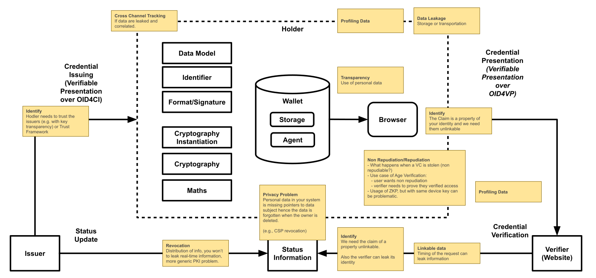

Staff Contact for Web Application Security, Web Authentication, Federated Identity Working Groups, and proposed Security Interest Group
Co-Chair of Threat Modeling Community Group
I was in W3C in 2006 for the Semantic Web Deployment Working Group
But in general, I am Security Geek since 2004 (and before) for Red Teaming, Blue Teaming, Security Research, etc...
I care about a secure Web
World Wide Web Consortium 万维网联盟
Founded in 1994 by Tim Berners-Lee, who was Director until June 12, 2023 由 Tim Berners-Lee 于 1994 年创立，并担任董事至 2023 年 6 月 12 日
Over 500 technical Web standards, 480 in progress 约480份开发中的标准
Consensus-driven process 由共识驱动的流程, Royalty-Free patent policy 免版税专利政策
Over 350 Members 超过 350个成员单位
What is Threat Modeling?
Threat Modeling is a family of structured, repeatable processes that allow us to make rational decisions to secure applications, software, and systems (Shostack, 2014).
During Threat Modeling, we can anticipate potential threats, such as vulnerabilities or absence of controls, and prioritize the mitigations (OWASP).
It is a form of risk assessment that models aspects of the attack and defense sides (NIST SP 800-53 Rev. 5, NIST SP 800-154).
When members proposed the standardization of the Digital Credentials API, members requested a comprehensive threats analysis because the API will mediate in the Browser high-assurance and government-issued credentials.
We have an Issuer, which issues the Verifiable Credential to the Holder and manages the status (e.g., revocation).
We have a Holder, who stores the Verifiable Credential in a Wallet, and send the Verifiable Presentation to a Verifier.
We have a Verifier, who verifies the Holder's Verifiable Presentations to give access to a resource or a service.
We also have a Verifiable Data Registry (VDR), which stores identifiers and schemas.
What are we working on? Exchanged Data
Verifiable Credentials (created by the Issuer):
Metadata: of the Credentials (e.g., reference to the issuer, the validity date)
Claim(s): one or more assertions where a characteristic of a subject is described, in a specific format (e.g., Alice is a citizen of a certain state).
Proof(s): cryptographic proof of the integrity of the credential, typically via a digital signature.
Verifiable Presentations (created by the Holder):
Metadata: of the Presentation
Verifiable Credential(s): data from multiple Verifiable Credentials in the form of additional claims.
Proof(s): cryptographic proof of the integrity of the credential, typically via a digital signature.
From a Threat Modeling perspective: we have cryptography, formats, serialization, canonicalization, identifiers, revocation methods, etc...
What are we working on? Identifiers
Talking about identifiers, we mainly refer to the Decentralized Identifiers (DIDs), an identifier technology based on cryptography that empowers the user to control their data and and usage.
DIDs methods can rely on various technologies, including blockchains, the web, InterPlanetary File System (IPFS), and Domain Name System (DNS).
From a Threat Modeling perspective: each DID method needs it is own Threat Model (e.g., did:web may calls home, did:btcr may have correlation)
What can go wrong? Mnemonic Threat Lists
One effective though inefficient approach to threat modeling is to cycle the various lists to understand how they may affect the model
STRIDE(Security Threats): Spoofing, Tampering, Repudiation, Denial of service, Escalation of privileges
LINDDUN(Privacy Threats): Linking, Identifying, Non-Repudiation, Detecting, Data Disclosure, Unawareness, Non-Compliance
Note: Repudiation is a Security Threat, and its negation Non-Repudiation, is a Privacy Threat.
Note: In OSSTMM, Security and Privacy are together, and anyway there are some overlaps.
What can go wrong? Using LINDDUN

Brainstorming, using gamification, in a Side Meeting @ IETF120
What are we going to do about it? Mitigations
Anonymous Revocation: a verifier must be able to verify the status of a credential, without having the ability to correlate information about the credentials and the holder.
Privacy-Preserving DID methods: For example, during resolution, it is possible that the method communicates with the issuer. If the DID uses a distributed ledger, it would be better not to write private information into it.
Selective Disclosure and Unlinkable Credentials: is the ability to show only a part of the credential and not the full one, in an unlinkable manner. For example, we can show only the date of birth rather than the full passport where it is contained, we are working on BBS cryptosuites.
Feedback on the EU Digital Identity's ARF 1.4.0: Our specific recommendation is to use the BBS [...], and countering future quantum threats, and we probably need new chips.
Did we do a good job?
All models are wrong, but some are useful from statistician George Box (1976), quoted by Shostack (2014)
This Model is useful for us to understand the big picture, create a place to sharing ideas, and understanding the need for other standards.